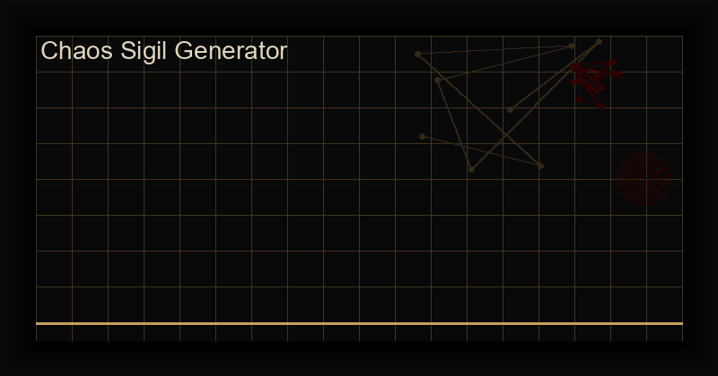

Chaos Sigil Generator App Review: Digital Sigil Making on Android (2026)
Overview: What Is the Chaos Sigil Generator?
The Chaos Sigil Generator is a powerful Android application that transforms the ancient art of sigilization into a precise, cryptographic process. Developed by Cha0smagick Labs, this app allows you to encode your intentions into unique, programmable sigils using a choice of multiple occult alphabets, planetary magic squares (kameas), and cryptographic hash functions.
At its core, the app follows the classic chaos magick sigilization process — statement of intent, reduction, and rendering — but replaces subjective artistic interpretation with deterministic cryptographic algorithms. The result is a sigil that is both personally meaningful and mathematically unique.
Key Features
Multiple Alphabet Systems
The app includes the Theban alphabet (Witches' script), Enochian script, Elder Futhark runes, Angelic, Malachim, Celestial, and Planetary seals. Each alphabet carries its own energetic and symbolic associations, allowing you to match the script to your intention. For wealth, use the Planetary seals of Jupiter. For protection, combine Elder Futhark runes with Algiz and Thurisaz.
Planetary Magic Squares (Kameas)
The app features the seven planetary kameas: Saturn (3x3), Jupiter (4x4), Mars (5x5), Sun (6x6), Venus (7x7), Mercury (8x8), and Moon (9x9). These ancient mathematical grids assign numeric values to letters, creating sigils that resonate with specific planetary energies. This feature alone makes it an indispensable tool for ceremonial magicians working with planetary magic.
Cryptographic Generation
Each sigil is generated using SHA-256 cryptographic hashing of your intention statement. This ensures that the same intention always produces the same sigil (deterministic), but the sigil cannot be reverse-engineered to reveal your intention (one-way function). This cryptographic approach aligns perfectly with the chaos magick principle of gnosis — the intention is encoded, charged, and released into the subconscious.
Sigil Charging Timer
The app includes an integrated charging timer that guides you through gnostic states. Set your preferred duration (2-15 minutes), and the app signals when it is time to fire the sigil — the moment of gnostic release that empowers the sigil. This transforms the app from a simple generator into a complete ritual tool.
Digital Sigils vs Traditional Sigils
Traditional sigils are drawn by hand, often with artistic embellishment that can distract from the pure intentional core. Digital sigils strip away the artistic variable, focusing entirely on the mathematical and symbolic encoding of intent. The Chaos Sigil Generator produces clean, precise sigils that can be reproduced identically across multiple devices, making them ideal for grimoires and talismans.
Who Should Use This App?
- Chaos magicians who want precise, reproducible sigil generation.
- Ceremonial magicians working with planetary and angelic correspondences.
- Programmers and tech practitioners who appreciate the cryptographic methodology.
- Rune workers who want to combine Elder Futhark with planetary magic.
- Collectors and artists creating talismans, amulets, and digital grimoires.
Pricing and Value
At $3.99, the Chaos Sigil Generator is priced competitively compared to single-use sigil services ($5-20 per sigil on some occult marketplaces). The app allows unlimited sigil generation across all alphabet systems and planetary kameas. The app is also included in the Complete Chaos Magick Bundle ($29.99 for 8 apps + 3 PDFs).
Final Verdict
The Chaos Sigil Generator is an essential tool for any digital magician. Its combination of cryptographic precision, multiple alphabet systems, and planetary kameas makes it the most versatile sigil creation app on Android. Whether you are a beginner exploring sigil magic for the first time or an experienced practitioner with specific planetary requirements, this app delivers professional-grade tools at an accessible price.
Rating: 9.0/10 — The definitive digital sigil tool for Android.
Download: Chaos Sigil Generator on Google Play
About the App
Chaos Sigil Generator is a premium Android app for Digital sigil creation tool. Download from Google Play or read our full review above.
Frequently Asked Questions
Is the Chaos Sigil Generator app free?
The Chaos Sigil Generator is a premium app available for $3.99 USD on Google Play. The one-time purchase includes all alphabet systems, planetary kameas, cryptographic generation, and lifetime updates with no ads or subscriptions.
What alphabets does the Sigil Generator include?
The app includes multiple ancient and occult alphabets: Theban, Enochian, Elder Futhark runes, Angelic script, Malachim, Celestial, and Planetary seals. Each alphabet can be used individually or combined for hybrid sigils.
Can I export sigils from the app?
Yes, you can export sigils as PNG images or SVG vector graphics. This allows you to use them in digital grimoires, print them for talismans, or incorporate them into other digital artwork.